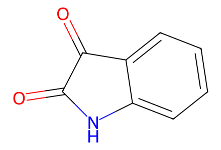
O=C1Nc2ccccc2C1=O16 molecular records; 18 preparation events; 4 selected paths. Source Schemes 2-5 and SI preparations from isatin 7 and known ketone 8, including isolated TMS ether S1 and crude drawn aminal 6. Earlier preparation of known 8 is not reconstructed. Unassigned source mixtures remain unspecified.
完整 JSON · 逐步 CSV · 路线序列 · SDF · HRMS 核对
| 事件 | 分子连接 | 报告产率 | Canonical reaction SMILES |
|---|---|---|---|
| E01 | 7 + 8 → 9 | 9: 81% | CC(=O)CCc1ccc(O[Si](C(C)C)(C(C)C)C(C)C)cc1.O=C1Nc2ccccc2C1=O>>CC(C)[Si](Oc1ccc(CCC(=O)CC2(O)C(=O)Nc3ccccc32)cc1)(C(C)C)C(C)C |
| E02 | 9 → S1 | S1: 76% | CC(C)[Si](Oc1ccc(CCC(=O)CC2(O)C(=O)Nc3ccccc32)cc1)(C(C)C)C(C)C>>CC(C)[Si](Oc1ccc(CCC(=O)CC2(O[Si](C)(C)C)C(=O)Nc3ccccc32)cc1)(C(C)C)C(C)C |
| E03 | S1 → 10 | 10: 95% | CC(C)[Si](Oc1ccc(CCC(=O)CC2(O[Si](C)(C)C)C(=O)Nc3ccccc32)cc1)(C(C)C)C(C)C>>CC(C)[Si](Oc1ccc(CCC(=O)CC2(O[Si](C)(C)C)C(=O)N(C(=O)OC(C)(C)C)c3ccccc32)cc1)(C(C)C)C(C)C |
| E04 | 10 → 11 | 11: 85% | CC(C)[Si](Oc1ccc(CCC(=O)CC2(O[Si](C)(C)C)C(=O)N(C(=O)OC(C)(C)C)c3ccccc32)cc1)(C(C)C)C(C)C>>CC(C)[Si](Oc1ccc(C/C=C(/CC2(O[Si](C)(C)C)C(=O)N(C(=O)OC(C)(C)C)c3ccccc32)O[Si](C)(C)C(C)(C)C)cc1)(C(C)C)C(C)C |
| E05 | 11 → 6 | not reported | CC(C)[Si](Oc1ccc(C/C=C(/CC2(O[Si](C)(C)C)C(=O)N(C(=O)OC(C)(C)C)c3ccccc32)O[Si](C)(C)C(C)(C)C)cc1)(C(C)C)C(C)C>>CC(C)[Si](Oc1ccc(C/C=C(/CC2(O[Si](C)(C)C)c3ccccc3N(C(=O)OC(C)(C)C)C2O)O[Si](C)(C)C(C)(C)C)cc1)(C(C)C)C(C)C |
| E06 | 6 → 4 | 4: 40% | CC(C)[Si](Oc1ccc(C/C=C(/CC2(O[Si](C)(C)C)c3ccccc3N(C(=O)OC(C)(C)C)C2O)O[Si](C)(C)C(C)(C)C)cc1)(C(C)C)C(C)C>>CC(C)[Si](Oc1ccc(CC2C(=O)Cc3c2n(C(=O)OC(C)(C)C)c2ccccc32)cc1)(C(C)C)C(C)C |
| E07 | 4 → 12 | 12: 86% | CC(C)[Si](Oc1ccc(CC2C(=O)Cc3c2n(C(=O)OC(C)(C)C)c2ccccc32)cc1)(C(C)C)C(C)C>>CC(C)[Si](Oc1ccc(CC2C(=O)C(C3C(=O)C(Cc4ccc(O[Si](C(C)C)(C(C)C)C(C)C)cc4)c4c3c3ccccc3n4C(=O)OC(C)(C)C)c3c2n(C(=O)OC(C)(C)C)c2ccccc32)cc1)(C(C)C)C(C)C |
| E08 | 12 → 13 + 14 | 13: 44%; 14: 20% | CC(C)[Si](Oc1ccc(CC2C(=O)C(C3C(=O)C(Cc4ccc(O[Si](C(C)C)(C(C)C)C(C)C)cc4)c4c3c3ccccc3n4C(=O)OC(C)(C)C)c3c2n(C(=O)OC(C)(C)C)c2ccccc32)cc1)(C(C)C)C(C)C>>CC(C)[Si](Oc1ccc(CC2C(=O)C(C3C(=O)C(Cc4ccc(O[Si](C(C)C)(C(C)C)C(C)C)cc4)c4[nH]c5ccccc5c43)c3c2[nH]c2ccccc32)cc1)(C(C)C)C(C)C.CC(C)[Si](Oc1ccc(CC2C(=O)C(C3C(=O)C(Cc4ccc(O[Si](C(C)C)(C(C)C)C(C)C)cc4)c4c3c3ccccc3n4C(=O)OC(C)(C)C)c3c2[nH]c2ccccc32)cc1)(C(C)C)C(C)C |
| E09 | 14 → 13 | 13: 68% | CC(C)[Si](Oc1ccc(CC2C(=O)C(C3C(=O)C(Cc4ccc(O[Si](C(C)C)(C(C)C)C(C)C)cc4)c4c3c3ccccc3n4C(=O)OC(C)(C)C)c3c2[nH]c2ccccc32)cc1)(C(C)C)C(C)C>>CC(C)[Si](Oc1ccc(CC2C(=O)C(C3C(=O)C(Cc4ccc(O[Si](C(C)C)(C(C)C)C(C)C)cc4)c4[nH]c5ccccc5c43)c3c2[nH]c2ccccc32)cc1)(C(C)C)C(C)C |
| E10 | 13 → 15 | 15: 87% | CC(C)[Si](Oc1ccc(CC2C(=O)C(C3C(=O)C(Cc4ccc(O[Si](C(C)C)(C(C)C)C(C)C)cc4)c4[nH]c5ccccc5c43)c3c2[nH]c2ccccc32)cc1)(C(C)C)C(C)C>>CC(C)[Si](Oc1ccc(C=C2C(=O)C(C3C(=O)C(=Cc4ccc(O[Si](C(C)C)(C(C)C)C(C)C)cc4)c4[nH]c5ccccc5c43)c3c2[nH]c2ccccc32)cc1)(C(C)C)C(C)C |
| E11 | 15 → 16 | 16: 72% | CC(C)[Si](Oc1ccc(C=C2C(=O)C(C3C(=O)C(=Cc4ccc(O[Si](C(C)C)(C(C)C)C(C)C)cc4)c4[nH]c5ccccc5c43)c3c2[nH]c2ccccc32)cc1)(C(C)C)C(C)C>>CC(C)[Si](Oc1ccc(C=C2C(=O)C(C3=C4C(=Nc5ccccc54)C(=Cc4ccc(O[Si](C(C)C)(C(C)C)C(C)C)cc4)C3=O)=C3C2=Nc2ccccc23)cc1)(C(C)C)C(C)C |
| E12 | 13 → 16 | 16: 70% | CC(C)[Si](Oc1ccc(CC2C(=O)C(C3C(=O)C(Cc4ccc(O[Si](C(C)C)(C(C)C)C(C)C)cc4)c4[nH]c5ccccc5c43)c3c2[nH]c2ccccc32)cc1)(C(C)C)C(C)C>>CC(C)[Si](Oc1ccc(C=C2C(=O)C(C3=C4C(=Nc5ccccc54)C(=Cc4ccc(O[Si](C(C)C)(C(C)C)C(C)C)cc4)C3=O)=C3C2=Nc2ccccc23)cc1)(C(C)C)C(C)C |
| E13 | 16 → 1 | 1: 88% | CC(C)[Si](Oc1ccc(C=C2C(=O)C(C3=C4C(=Nc5ccccc54)C(=Cc4ccc(O[Si](C(C)C)(C(C)C)C(C)C)cc4)C3=O)=C3C2=Nc2ccccc23)cc1)(C(C)C)C(C)C>>O=C1C(=Cc2ccc(O)cc2)C2=Nc3ccccc3C2=C1C1=C2C(=Nc3ccccc32)C(=Cc2ccc(O)cc2)C1=O |
| E14 | 16 → 17 | not reported | CC(C)[Si](Oc1ccc(C=C2C(=O)C(C3=C4C(=Nc5ccccc54)C(=Cc4ccc(O[Si](C(C)C)(C(C)C)C(C)C)cc4)C3=O)=C3C2=Nc2ccccc23)cc1)(C(C)C)C(C)C>>CC(C)[Si](Oc1ccc(C=C2C(=O)C(=C3C(=O)C(=Cc4ccc(O[Si](C(C)C)(C(C)C)C(C)C)cc4)c4[nH]c5ccccc5c43)c3c2[nH]c2ccccc32)cc1)(C(C)C)C(C)C |
| E15 | 17 → 2 | 2: 76% | CC(C)[Si](Oc1ccc(C=C2C(=O)C(=C3C(=O)C(=Cc4ccc(O[Si](C(C)C)(C(C)C)C(C)C)cc4)c4[nH]c5ccccc5c43)c3c2[nH]c2ccccc32)cc1)(C(C)C)C(C)C>>O=C1C(=Cc2ccc(O)cc2)c2[nH]c3ccccc3c2C1=C1C(=O)C(=Cc2ccc(O)cc2)c2[nH]c3ccccc3c21 |
| E16 | 17 → 16 | 16: 87% | CC(C)[Si](Oc1ccc(C=C2C(=O)C(=C3C(=O)C(=Cc4ccc(O[Si](C(C)C)(C(C)C)C(C)C)cc4)c4[nH]c5ccccc5c43)c3c2[nH]c2ccccc32)cc1)(C(C)C)C(C)C>>CC(C)[Si](Oc1ccc(C=C2C(=O)C(C3=C4C(=Nc5ccccc54)C(=Cc4ccc(O[Si](C(C)C)(C(C)C)C(C)C)cc4)C3=O)=C3C2=Nc2ccccc23)cc1)(C(C)C)C(C)C |
| E17 | 2 → 1 | 1: 100% | O=C1C(=Cc2ccc(O)cc2)c2[nH]c3ccccc3c2C1=C1C(=O)C(=Cc2ccc(O)cc2)c2[nH]c3ccccc3c21>>O=C1C(=Cc2ccc(O)cc2)C2=Nc3ccccc3C2=C1C1=C2C(=Nc3ccccc32)C(=Cc2ccc(O)cc2)C1=O |
| E18 | 1 → 2 | 2: 75% | O=C1C(=Cc2ccc(O)cc2)C2=Nc3ccccc3C2=C1C1=C2C(=Nc3ccccc32)C(=Cc2ccc(O)cc2)C1=O>>O=C1C(=Cc2ccc(O)cc2)c2[nH]c3ccccc3c2C1=C1C(=O)C(=Cc2ccc(O)cc2)c2[nH]c3ccccc3c21 |

O=C1Nc2ccccc2C1=O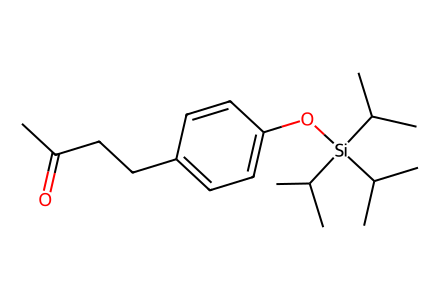
CC(=O)CCc1ccc(O[Si](C(C)C)(C(C)C)C(C)C)cc1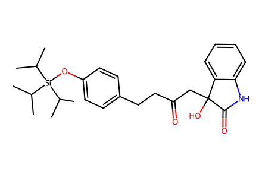
CC(C)[Si](Oc1ccc(CCC(=O)CC2(O)C(=O)Nc3ccccc32)cc1)(C(C)C)C(C)C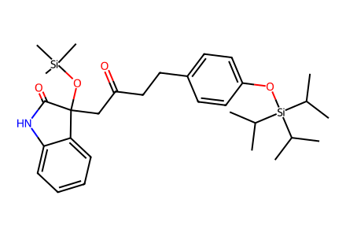
CC(C)[Si](Oc1ccc(CCC(=O)CC2(O[Si](C)(C)C)C(=O)Nc3ccccc32)cc1)(C(C)C)C(C)C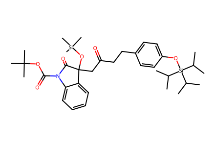
CC(C)[Si](Oc1ccc(CCC(=O)CC2(O[Si](C)(C)C)C(=O)N(C(=O)OC(C)(C)C)c3ccccc32)cc1)(C(C)C)C(C)C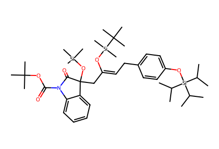
CC(C)[Si](Oc1ccc(C/C=C(/CC2(O[Si](C)(C)C)C(=O)N(C(=O)OC(C)(C)C)c3ccccc32)O[Si](C)(C)C(C)(C)C)cc1)(C(C)C)C(C)C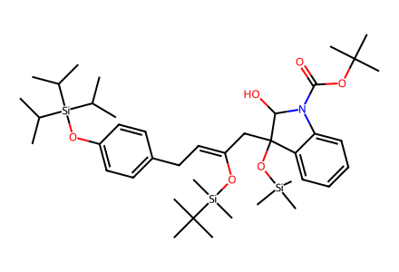
CC(C)[Si](Oc1ccc(C/C=C(/CC2(O[Si](C)(C)C)c3ccccc3N(C(=O)OC(C)(C)C)C2O)O[Si](C)(C)C(C)(C)C)cc1)(C(C)C)C(C)C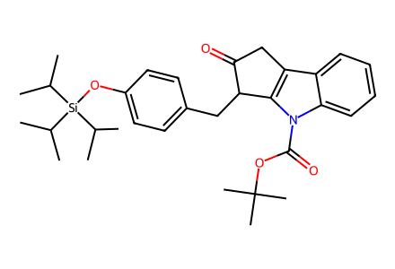
CC(C)[Si](Oc1ccc(CC2C(=O)Cc3c2n(C(=O)OC(C)(C)C)c2ccccc32)cc1)(C(C)C)C(C)C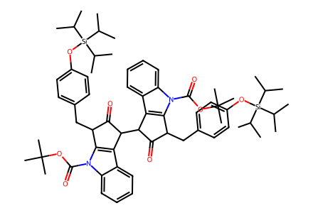
CC(C)[Si](Oc1ccc(CC2C(=O)C(C3C(=O)C(Cc4ccc(O[Si](C(C)C)(C(C)C)C(C)C)cc4)c4c3c3ccccc3n4C(=O)OC(C)(C)C)c3c2n(C(=O)OC(C)(C)C)c2ccccc32)cc1)(C(C)C)C(C)C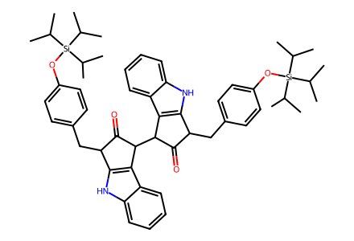
CC(C)[Si](Oc1ccc(CC2C(=O)C(C3C(=O)C(Cc4ccc(O[Si](C(C)C)(C(C)C)C(C)C)cc4)c4[nH]c5ccccc5c43)c3c2[nH]c2ccccc32)cc1)(C(C)C)C(C)C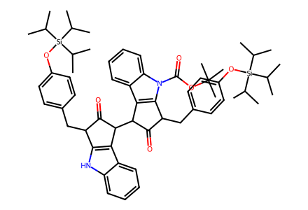
CC(C)[Si](Oc1ccc(CC2C(=O)C(C3C(=O)C(Cc4ccc(O[Si](C(C)C)(C(C)C)C(C)C)cc4)c4c3c3ccccc3n4C(=O)OC(C)(C)C)c3c2[nH]c2ccccc32)cc1)(C(C)C)C(C)CCC(C)[Si](Oc1ccc(C=C2C(=O)C(C3C(=O)C(=Cc4ccc(O[Si](C(C)C)(C(C)C)C(C)C)cc4)c4[nH]c5ccccc5c43)c3c2[nH]c2ccccc32)cc1)(C(C)C)C(C)CCC(C)[Si](Oc1ccc(C=C2C(=O)C(=C3C(=O)C(=Cc4ccc(O[Si](C(C)C)(C(C)C)C(C)C)cc4)c4[nH]c5ccccc5c43)c3c2[nH]c2ccccc32)cc1)(C(C)C)C(C)C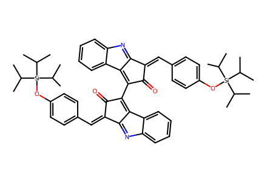
CC(C)[Si](Oc1ccc(C=C2C(=O)C(C3=C4C(=Nc5ccccc54)C(=Cc4ccc(O[Si](C(C)C)(C(C)C)C(C)C)cc4)C3=O)=C3C2=Nc2ccccc23)cc1)(C(C)C)C(C)C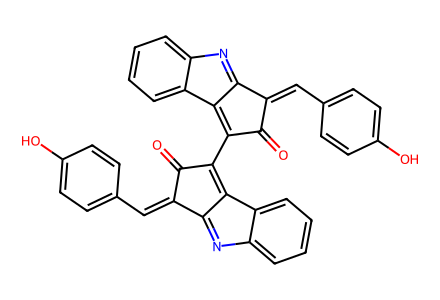
O=C1C(=Cc2ccc(O)cc2)C2=Nc3ccccc3C2=C1C1=C2C(=Nc3ccccc32)C(=Cc2ccc(O)cc2)C1=O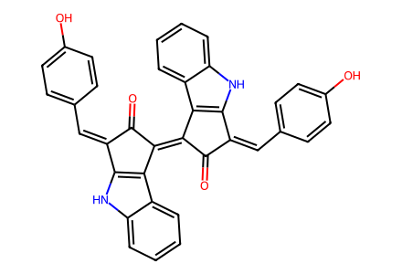
O=C1C(=Cc2ccc(O)cc2)c2[nH]c3ccccc3c2C1=C1C(=O)C(=Cc2ccc(O)cc2)c2[nH]c3ccccc3c21